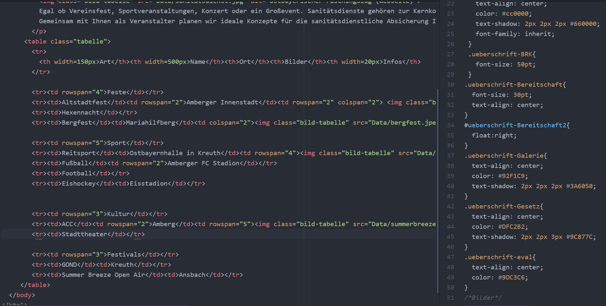
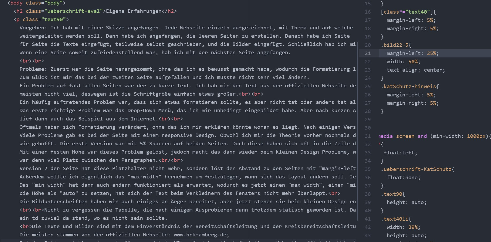

Vorgehen: Ich hab mit einer Skizze angefangen. Jede Webseite einzeln aufgezeichnet, mit Thema und auf welche Seiten
weitergeleitet werden soll. Dann habe ich angefangen, die leeren Seiten zu erstellen. Danach habe ich Seite
für Seite die Texte eingefügt, teilweise selbst geschrieben, und die Bilder eingefügt. Schließlich hab ich mir die Formatierung vorgenommen.
Wenn eine Seite soweit zufriedenstellend war, hab ich mit der nächsten Seite angefangen.
Probleme: Zuerst war die Seite herangezommt, ohne das ich es bewusst gemacht habe, wodurch die Formatierung letztendlich zu klein war.
Zum Glück ist mir das bei der zweiten Seite aufgefallen und ich musste nicht sehr viel ändern.
Ein Problem auf fast allen Seiten war der zu kurze Text. Ich hab mir den Text aus der offiziellen Webseite des BRK Amberg kopiert, jedoch ist das
meisten nicht viel, deswegen ist die Schriftgröße einfach etwas größer.
Ein häufig auftretendes Problem war, dass sich etwas formatieren sollte, es aber nicht tat oder anders tat als erwartet. Da waren oft Vorränge oder so etwas ähnliches das Problem.
Das erste richtige Problem war das Drop-Down Menü, das ich mir unbedingt eingebildet habe. Aber nach kurzen Anlaufschwierigkeiten(vergessen die Klassen umzubenennen)
lief dann auch das Beispiel aus dem Internet.
Oftmals haben sich Formatierung verändert, ohne das ich mir erklären könnte woran es liegt. Nach einigen Versuchen bin ich aber meistens auf eine Lösung gekommen.
Viele Probleme gab es bei der Seite mit einem responsive Design. Obwohl ich mir die Theorie vorher nochmals durchgelesen hatte, war die Umsetzung nicht so leicht
wie gehofft. Die erste Version war mit 5% Spacern auf beiden Seiten. Doch diese haben sich oft in die Zeile darüber verschoben und haben dann weiter unten gefehlt.
Mit einer festen Höhe war dieses Problem gelöst, jedoch macht das dann wieder beim kleinen Design Probleme, weil dort dann alle Items untereinander liegen sollen,
war denn viel Platz zwischen den Paragraphen.

Version 2 der Seite hat diese Platzhalter nicht mehr, sondern löst den Abstand zu den Seiten mit "margin-left:". Das macht alles leichter, aber da muss man erst einmal dran denken.
Außerdem wollte ich eigentlich das "max-width" hernehmen um festzulegen, wann sich das Layout ändern soll. Jedoch hat das selbst nach viel gegooglen und ausprobieren nicht geklappt.
Das "min-width" hat dann auch andern funktioniert als erwartet, wodurch es jetzt einen "max-width", einen "min-width" und einen allgemeinen Teil gibt. Als ich dann auch noch daran gedacht hatte
die Höhe als "auto" zu setzen, hat sich der Text beim Verkleinern des Fensters nicht mehr überlappt.
Die Bildunterschriften haben wir auch einiges an Ärger bereitet, aber jetzt stehen sie beim kleinen Design endlich darunter, so wie gewollt.
Nicht zu vergessen die Tabelle, die nach einigem Ausprobieren dann trotzdem statisch geworden ist. Da hat mir am meisten Zeit gekostet, dass ich beim rowspan sehr verwirt war und ab und zu
ein td zuviel da stand, wo es nicht sein sollte.
Die Texte und Bilder sind mit dem Einverständnis der Bereitschaftsleitung Amberg und der Kreisbereitschaftsleitung Amberg-Sulzbach verwendet worden.
Texte, die nicht von der Webseite sind, sondern von mir selbst geschrieben, haben eine hellere Schriftfarbe.
Die meisten Bilder stammen von der offiziellen Webseite: www.brk-amberg.de;
Bei den Bildern steht es immer in Klammern dabei: KBL = Kreisbereitschaftsleitung; Webseite=offizielle Webseite;